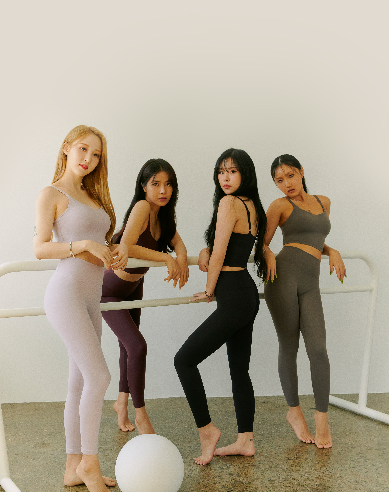
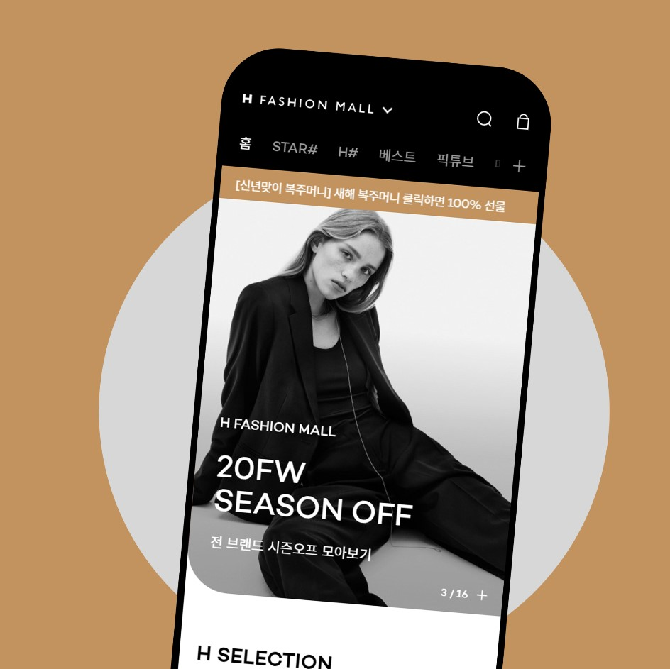

DaYoung.
UI MarkUp
Developer
반갑습니다!
저는 견고한 UI와
기억에 남는 UX를 만드는
웹 퍼블리셔에요.
안녕하세요, 저는 처음에는 작은 관심으로 국비 수업을 수강했습니다.
수업을 진행할수록 빈 공간에서 하나씩 채워지는 과정이 너무나 흥미로웠고 웹퍼블리셔라는 직업에 매력을 느끼게 되었습니다.
하지만 재미와 실력은 비례하지 않았습니다.
스스로 실력이 부족하다고 느꼈던 저는 직장과 병행한 채로 주말 2일 동안 6개월(총 150시간)의 시간을 온전히 제 실력을 향상시키기 위해 노력했습니다.
앞으로 저는 재미와 실력 두마리의 토끼를 다잡는 웹퍼블리셔가 될 것입니다!
제 최근 작업물을
좀 더 자세히 살펴보세요!
-
 네이버 클론코딩
네이버 클론코딩네이버
네이버 사이트 레이아웃을 참고하여 직접 구현해보고, 실무에서 사용하는 코드들에 대해 탐구했습니다.
blind처리를 하여 해당 아이콘에 대해 설명하는 코드를 작성하여 숨겼으며, 뉴스정보, 날씨정보 등 간단한 슬라이드를 구현했습니다.#html #css #jQuery -
 관공서 project
관공서 project서울시청
크로스브라우징에 맞춰 모든 브라우저에서 차별없는 기능작동을 구현했으며,
장애인이나 노약자의 웹 이용에 불편과 차별을 해소하기 위해 웹접근성을 고려한 프로젝트입니다.#html #css #jQuery -
반응형 pc project
VIRNECT
하나의 템플릿으로 PC,테블릿,모바일 모든 기기에 대응할 수 있도록 구현한 프로젝트입니다.
미디어 쿼리를 사용해 특정 화면에 따라 레이아웃을 변경했습니다.#html #css #jQuery -
적응형 pc project
andar
비교적 최신 코드를 사용한 프로젝트입니다.
모바일에서도 무리없이 이용할 수 있도록 구현했습니다.#html #css #scss #jQuery -
모션특화 project
서해종합건설
gsap를 이용하여 각 슬라이드가 넘어가는 게이지를 애니메이션화하여 손쉽게 구현했습니다.
#html #css #scss #jQuery #gsap -
다양한 슬라이드를 사용한 project
H-Fashion
#html #css #scss #jQuery -
데이터 전송 project
FLO
JSON을 이용하여 데이터를 저장하고, 저장된 데이터를 JavaScript를 이용하여 페이지를 구현한 프로젝트입니다.
#html #css #scss #jQuery #JavaScript #JSON